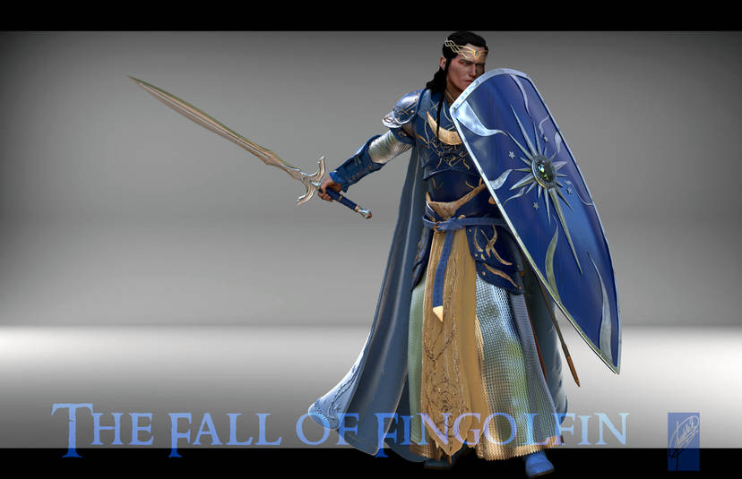

El Gran Rey de los Noldor de Beleriand

Fingolfin es un personaje ficticio del legendarium del escritor J. R. R. Tolkien, que aparece en su novela póstuma El Silmarillion. Fingolfin era un elfo del clan noldor, hijo del rey Finwë e Indis, hermano de Findis, Lalwen, y Finarfin, y medio hermano de Fëanor. Se casó con Anairë y sus hijos fueron Fingon, Turgon, Aredhel, y Argon. Se convirtió en el segundo rey supremo de los Noldor en el exilio, tras Fëanor, en Beleriand. Su nombre es una traducción al sindarin del quenya Nolofinwë que significa ‘sabio Finwë’. Su nombre materno, según Tolkien habría sido Arakáno que en quenya significa ‘comandante del rey’.
Historia

En Aman, Fingolfin es amenazado por su medio hermano Fëanor. Fingolfin era el más fuerte, el más firme y el más valiente de los hijos de Finwë y al igual que Fëanor fue uno de los Eldar más honrados por los Noldor en Aman. Las mentiras y argucias de Melkor ocasionaron el distanciamiento y posterior enfrentamiento de Fëanor y Fingolfin, causando el ulterior destierro de Fëanor de Tirion. Sin embargo, en la fiesta de floración de Valinor, se reconcilió con Fëanor. Prometió que lo seguiría ante cualquier camino que tomara, pero rompió su promesa al no seguir a Fëanor en su huida a la Tierra Media, por miedo a que Fëanor guiara a su gente a la perdición. Lamentablemente sus huestes participaron en la Matanza de Alqualondë, pero fueron abandonados en Araman, cuando las huestes de Fëanor tomaron los barcos robados a los Teleri y se dirigieron al Este. De esta manera Fingolfin, sus hijos y los hijos de Finarfin se dirigieron a pie a la Tierra Media, atravesando el Helcaraxë, «la tierra del hielo crujiente». En esta difícil travesía muchos de los Noldor murieron, entre ellos Elenwë, esposa de su hijo Turgon.
En la Tierra Media, Fingolfin y sus huestes disminuidas llegaron finalmente a Beleriand, y cuando llegaron a Mithrim, el Sol se levantó por primera vez en el Oeste. Los siervos de Morgoth huyeron hacia Angband dejando el camino libre, y Fingolfin avanzó llegando así a las puertas de Angband, pero dándose cuenta del poder que encerraban las tierras de Morgoth, se retiró nuevamente a Mithrim para establecerse ahí. Los Noldor estaban ahora divididos debido a la traición de Fëanor, pero esta querella terminó con el rescate de Maedhros, por parte de Fingon. Luego de la muerte de Fëanor, Maedhros renunció al trono de los Noldor y se lo cedió a Fingolfin por ser el mayor de los hijos de Finwë. Fingolfin y los hijos de Fëanor tomaron por suyas las tierras libres de Beleriand y mantuvieron siempre la vigilancia de las tierras de Morgoth, el cual para comprobar la fuerza de los príncipes Noldorin, atacó por diversos flancos. Sin embargo, las huestes de Morgoth fueron derrotadas en la Dagor Aglareb, «la Batalla Gloriosa». Los Noldor alertados, fortalecieron su alianza e iniciaron el sitio de Angband, que duró cerca de 400 años, durante los cuales fueron los defensores de los demás pueblos libres de la Tierra Media y los principales enemigos de Morgoth. El sitio terminó con la Dagor Bragollach, «la Batalla de la Llama Súbita», en la que perecieron Angrod y Aegnor, hijos de Finarfin. Además los hijos de Fëanor fueron desterrados de sus tierras.
Su final, La cabalgata de Fingolfin hacia las puertas de Angband. Tras el súbito ataque maquinado por Morgoth, Fingolfin sintió que la perdición de su pueblo se avecinaba. Entonces cabalgó solo hasta las puertas de Angband y retó a Morgoth a un combate singular, acabando finalmente muerto (no sin antes herir al vala varias veces, causándole siete heridas diferentes y finalmente cortándole el pie, cuyo flujo de sangre ahogó a Fingolfin, demostrando por qué era el elfo más poderoso en la batalla, con habilidad suficiente no sólo para enfrentar y malherir al más poderoso de los Valar, sino para hacerle sentir miedo). Thorondor, Rey de las Águilas, rescató el cadáver del Rey. De esta manera, su hijo Fingon se convirtió en el nuevo Rey Supremo de los Noldor. Pero Thorondor llevó el cuerpo del Rey a Gondolin, donde Turgon lo enterró en un mausoleo que construyó especialmente en las Montañas Circundantes.
En la Dagor Dagorath, En el Fin, el Rey Fingolfin volverá a aparecer en la Última Batalla, pero no obstante será Túrin Turambar quien le aseste el golpe final a Morgoth con su espada Gurthang, como venganza por el mal que el vala hizo a su familia.